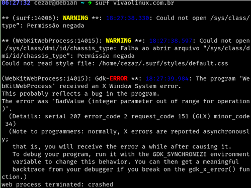
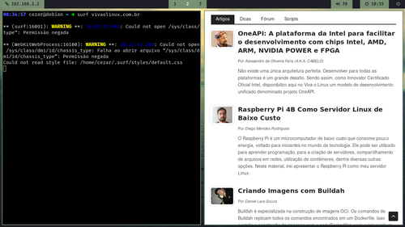

Navegadores WebKit VS Placas NVidia
Autor: Cézar Augusto de Campos
18 de abril de 2021
A NVidia nunca foi fã de navegadores baseados em WebKit, como o Gnome Web e o Surf browser. Se você tem uma placa de vídeo e usa os drivers proprietários, é bem provável que você não consiga usar esses navegadores.
Figura 1:

Surf browser falhando ao abrir vivaolinux.com.br
A razão pela qual isso não funciona, é porque o navegador tenta usar a aceleração via hardware. Para que você consiga usar esse tipo de navegador com placas da NVidia, é preciso desativar essa aceleração e para fazer isso basta definir uma variável de ambiente:
WEBKIT_DISABLE_COMPOSITING_MODE=1
Coloque esta variável dentro do arquivo /etc/environment e você estará pronto para usar!

Basta reiniciar o computador para isso dar certo.
Até a próxima dica. =p